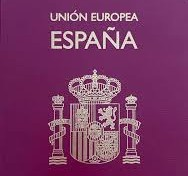
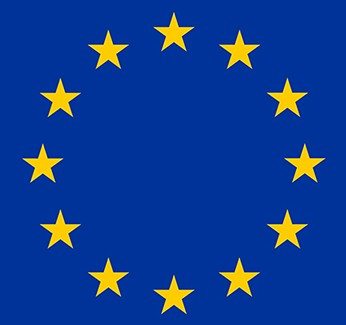

|
INTRODUCTION |

Have you ever dreamed of traveling around Europe? In this activity, you can do it... at least on paper! Through the WebQuest: Plan your trip through the European Union!, you will have the opportunity to learn how to handle decimal numbers while organizing a fascinating trip. This project will integrate math skills, collaborative work and technological tools for you to plan an itinerary on a limited budget. You will discover how to apply mathematics in practical situations and develop useful life skills such as budget management and sustainable planning.
|
|
ASSIGNMENT |

Your mission will be to plan a trip through Europe respecting a budget of 2500 euros. You will have to:
- Select destinations within the European Union.
- Calculate the costs of transportation, accommodation, and tourist activities using specific web pages.
- Adjust the budget using operations with decimal numbers, rounding and truncating values as needed.
- Submit a final report in PDF format, including:
* Detailed itinerary.
* Itemized and adjusted budget.
* Reflection on the sustainability of the trip.
At the end, you will perform a co-evaluation of your classmates and participate in a group reflection on what you have learned.
|
|
PROCESS |
First session: Introduction and initial planning.
The teacher will explain the activity, objectives and evaluation criteria. Groups of 4 people will be formed.
You will start exploring the digital tools and resources provided in the WebQuest to select destinations and get a first approximation of the budget.
Second session: Development
Together with your group, you will define the details of the trip (destinations, transportation, accommodations and activities).
You will make detailed cost calculations and adjust the values to the assigned budget.
You will resolve doubts with the teacher and, if necessary, continue the work at home using collaborative tools.
Third session: Delivery and evaluation
Finalize the report and upload it in PDF format to the virtual platform.
Complete a co-evaluation questionnaire to evaluate the performance of your classmates.
Participate in a group reflection on the experience and the mathematics applied in the project.
|
|
RESOURCES |
To complete this activity, you can use the following resources (or you can choose another ones):
Skyscanner: flight search engine - https://www.skyscanner.es/
Trainline: train ticket search engine - https://www.thetrainline.com/es/trenes/europa
Flixbus: bus ticket search engine - https://www.flixbus.es/
Airbnb: tourist rental search engine - https://www.airbnb.es/
Booking: hotel search engine - https://www.tripadvisor.es/
Tripadvisor: tourist activities search engine - https://docs.google.com/document/create?hl=es
Google Docs: cloud text editor - https://docs.google.com/spreadsheets/create?hl=es
|
|
EVALUATION |
Your performance will be evaluated according to the following criteria:
Final report (90%):
Clarity and coherence of the itinerary.
Accuracy in mathematical calculations.
Correct use of approximations and rounding.
Reflection on the sustainability of the trip.
Co-evaluation (5%):
Participation and individual contribution to the team.
Assessment of collaborative work.
Class participation (5%):
Resolution of doubts and contributions to the group.
Specific rubrics will be used for each section and questionnaires for the co-evaluation.
|
|
CONCLUSION |
Through this activity, you will not only have learned to work with decimal numbers in a practical and meaningful way, but you will also have developed life skills, such as planning a budget and working in a team. In addition, you will have become familiar with digital tools and reflected on the importance of sustainable travel. We hope this experience will inspire you for your future real travels!
|
|
CREDITS |
WebQuest design and teaching guide: Mathematics Department.
ICT coordination: Computer Science Department.
Online resources: Booking websites, spreadsheets and cloud tools.
Special thanks: To the students for their active participation and creativity in planning their trips.
|